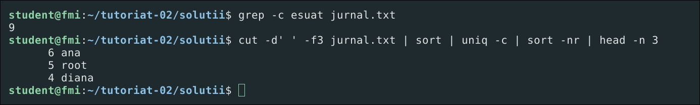

Redirectări, pipe-uri și filtre
Unde își scrie un program rezultatul și erorile, cum le salvezi în fișiere și cum legi mai multe comenzi cu un pipe ca să afli ce vrei dintr-un fișier text.

Cinci întrebări, apoi trecem la terminal
Unde scrie un program?
Cele trei fluxuri: stdin, stdout, stderr.
Cum trimit rezultatul într-un fișier?
Redirectări: >, >>, 2>.
Cum leg două comenzi?
Pipe-ul | și filosofia UNIX.
Ce unelte am pentru text?
Filtre: grep, sort, uniq, cut.
De ce contează ghilimelele?
Ghilimele și backslash.
Cuvinte pe care le vom folosi des. Apasă pe unul:
Cum împărțim cele 90 de minute
Orice program are o intrare și două ieșiri
Fiecare are un număr, numit descriptor. Apasă pe un număr.
Trimite rezultatul într-un fișier, nu pe ecran
Comanda e mereu ls date.in lipsa.txt (al doilea fișier nu există).
/dev/null e un tocător.Rezultatul și erorile în același fișier: 2>&1
Citește-l „2 devine o copie a lui 1, așa cum e 1 acum”, de la stânga la dreapta.
2>&1 la final.> golește fișierul întâi, >> adaugă la final
Apasă de mai multe ori pe fiecare și urmărește f.txt.
Leagă comenzile între ele, pas cu pas
Ca la o linie de asamblare: fiecare comandă face un singur lucru și dă mai departe.
„Scrieți programe care fac un singur lucru și îl fac bine, și care lucrează împreună prin text.” · Doug McIlroy, autorul pipe-ului din UNIX
Pipe-ul duce doar stdout. Erorile trec pe lângă, direct pe ecran.
grepPăstrează doar liniile care conțin un tipar
Intrarea. Verde = linia trece prin filtru.
sort și uniqDe ce scriem mereu sort | uniq?
uniq compară fiecare linie doar cu cea de dinainte. Dublurile care nu stau una lângă alta îi scapă.
primele 10 nume din jurnal
ieșirea
sort îi așază pe toți în ordine, ca gemenii să ajungă alături.Cine apare cel mai des? Rețeta completă
Combinația asta apare la aproape orice exercițiu de tipul „care e cel mai frecvent…?”.
cut -d' ' -f3ia doar câmpul care te interesează (aici, numele)sortaduce valorile identice una lângă altauniq -cle numără: 6 ana, 5 root…sort -nrcel mai mare număr primul: -n numeric, -r invershead -n 3păstrează doar primele treiDe ce -n? Apasă și compară:
Ce primește de fapt programul?
Shell-ul e ca un secretar: înainte să pornească comanda, completează singur $HOME și *.c. Ghilimelele îi spun ce să nu atingă.
Argumentele primite de program (argv):
"..."înlocuiește doar $VAR (plic cu fereastră)
'...'nu înlocuiește nimic (plic sigilat)
\oprește un singur caracter
Fiecare spațiu desparte argumentele
Shell-ul împarte comanda în cuvinte la fiecare spațiu. Dacă vrei un text cu spații ca un singur argument, pune-l între ghilimele.
grep și seturile pentru tr între ghilimele simple. Variabilele între ghilimele duble: "$fisier".Când rulează a doua comandă: && și ||
grep lasă un cod de ieșire: 0 a găsit, 1 n-a găsit, 2 eroare. Următoarea comandă poate ține cont de el.
a && bb rulează doar dacă a a reușit (0)a || bb rulează doar dacă a a eșuata ; bb rulează oricumexamen && mare. „Dacă nu-l iau, învăț în vară” e examen || invat.Scriem în C un mini-grep
./exercitiu [-i] [-v] [-n] [-c] <tipar> [fisier] · patru reguli pentru un program bun de pus într-un pipe:
Citește din fișierul primit sau, dacă lipsește, din stdin.Așa merge și cat date.in | ./exercitiu linux.
Liniile găsite pe stdout. Erorile și statistica pe stderr.Ca să nu ajungă în pipe sau în fișierul cu rezultate.
Cod de ieșire ca la grep: 0 găsit, 1 negăsit, 2 eroare.Ca să meargă ./exercitiu x f && echo gasit.
Închide cu fclose() doar ce a deschis cu fopen().Niciodată stdin: nu l-a deschis el.
Soluția, rulată în cinci feluri
Filtrele pe care le folosești azi
Apasă pe o comandă ca să vezi un exemplu pe jurnal.txt.
Capcanele clasice cu pipe-uri și redirectări
Apasă pe una: vezi de ce se întâmplă și cum o eviți.
Trei întrebări rapide
Deschide terminalul și urmează pașii
Întâi exercițiile cu pipe-uri din pipeline.sh, apoi TODO-urile din scheletul exercitiu.c.
Ce exersezi
Citești din fișier sau din stdin, separi datele (stdout) de mesaje (stderr) și întorci un cod de ieșire cu care merg && și ||.
Bonus: Valgrind
Comentează fclose(in), rulează make valgrind și citește ce ți-a rămas deschis. Îl folosim pe larg în Tutoriatul 04.
Te-ai blocat? Soluțiile sunt în tutoriat-02/solutii/. Încearcă întâi singur.